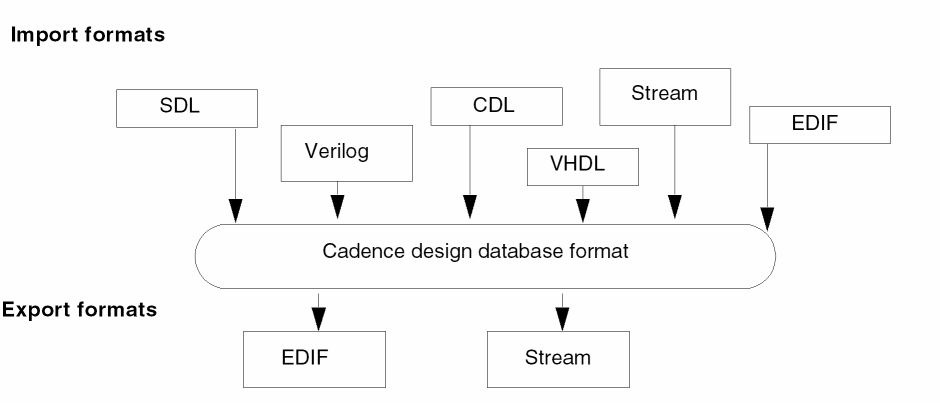
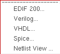
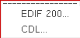

13
Importing and Exporting Designs
The Virtuoso Studio Design Environment is an open system. You can create design data in a number of industry-standard data formats and use Cadence products to work on or complete your design.
The design data translators let you translate a design in one format to a Cadence design database format or take a Cadence design database and translate it into another format. Cadence offers the following translators (your site might or might not offer all of them):

To import a design in another format into the Cadence design database format,
-
From the Command Interpreter Window (CIW), choose File – Import.
A submenu of the available translators on your system appears. -
Select a translator.
The translator form appears.
To export a design from the Cadence design database format into another design format:
-
From the CIW, choose File – Export.
A submenu of the available translators on your system appears. -
Select a translator.
The interface form for the translator appears.
Return to top